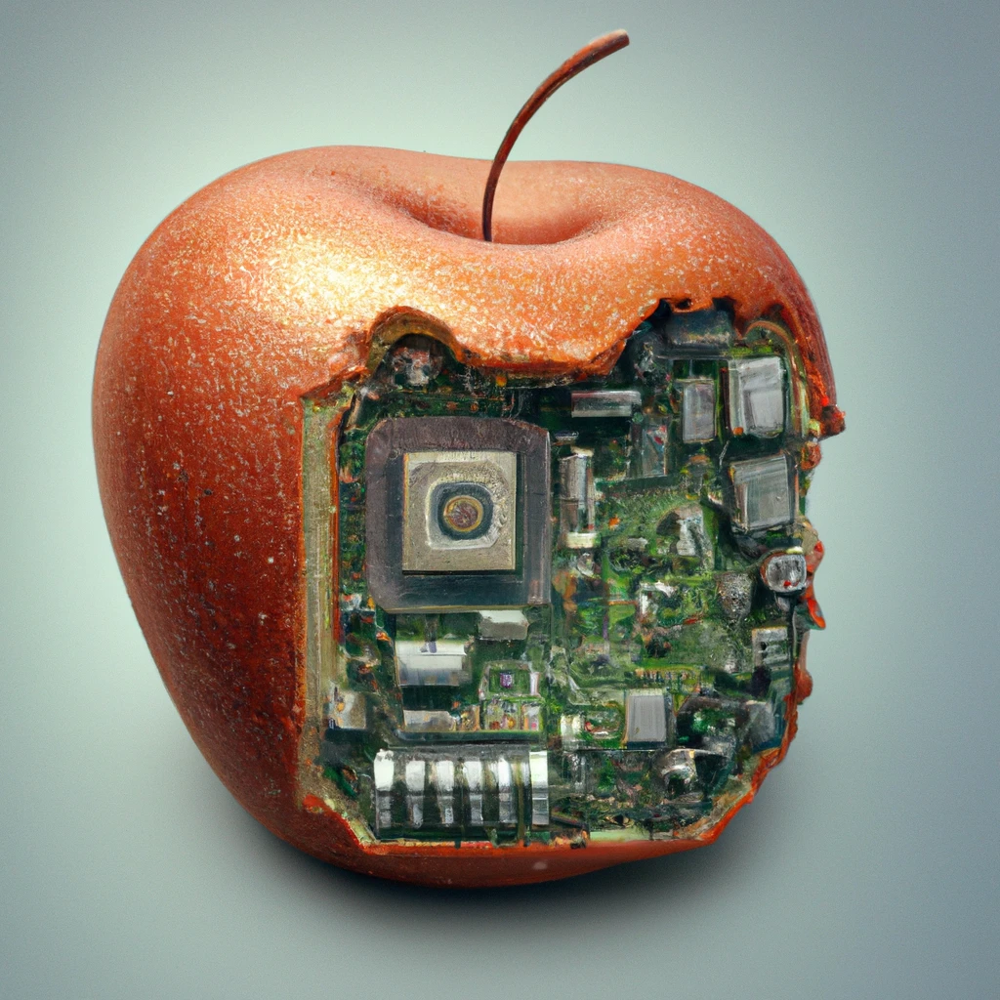
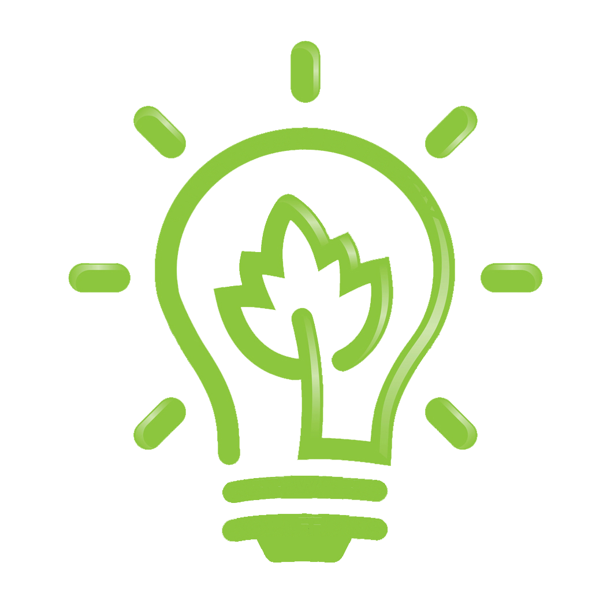

Apple Bio-Computer
Energie-neutraal

recyclebaar
In de wonderlijke wereld van technologische innovatie kwam er een nieuw tijdperk aan met de onthulling van de meest revolutionaire bio-computer ooit: de Appel Bio-Computer. Deze unieke creatie bracht de natuur en technologie op een betoverende manier samen, waardoor gebruikers een geheel nieuwe ervaring konden beleven. De kern van deze baanbrekende bio-computer bestond uit een perfecte symbiose tussen een sappige appel en geavanceerde computerhardware. Een glanzende, knapperige appel fungeerde als het levendige hart van de bio-computer, terwijl ingenieuze technologie binnenin zorgde voor een naadloze integratie van organische en kunstmatige elementen. Wat deze bio-computer echt onderscheidde, was het unieke energievoorzieningssysteem. De appel, doordrenkt met geavanceerde nanotechnologie, diende niet alleen als een decoratief buitenomhulsel maar fungeerde ook als een organische stroombron. Een complex netwerk van microscopische elektrochemische processen onttrok energie uit de natuurlijke suikers in de appel, waardoor de computer werd voorzien van een duurzame en milieuvriendelijke stroombron. Echter, voor degenen die liever geen verse appels op hun bureau hadden, bood de Appel Bio-Computer ook een alternatieve energieoptie. Met behulp van een speciaal ontworpen (oplaadbare) batterij kon de computer moeiteloos functioneren zonder de aanwezigheid van de fruitige energiebron. Dit zorgde voor ultieme flexibiliteit, waardoor gebruikers hun bio-computer konden aanpassen aan hun specifieke behoeften en voorkeuren. De mogelijkheden van de Appel Bio-Computer waren werkelijk grenzeloos. Met zijn organische interface konden gebruikers intuïtief communiceren met de computer, terwijl de verbluffende rekenkracht en geavanceerde functies ervoor zorgden dat deze bio-computer niet alleen een lust voor het oog was, maar ook een krachtige metgezel voor dagelijkse taken en creatieve ondernemingen. De lancering van de Appel Bio-Computer markeerde niet alleen een mijlpaal in de geschiedenis van technologische vooruitgang, maar ook een ode aan de harmonieuze samensmelting van natuur en innovatie. Het was niet zomaar een computer; het was een levendige getuigenis van hoe de mensheid kon floreren door te putten uit de overvloed van de natuur en tegelijkertijd geavanceerde technologie te omarmen. De wereld stond versteld van deze buitengewone prestatie, en de Appel Bio-Computer werd al snel een icoon van vooruitgang en duurzaamheid in de wereld van moderne technologie.